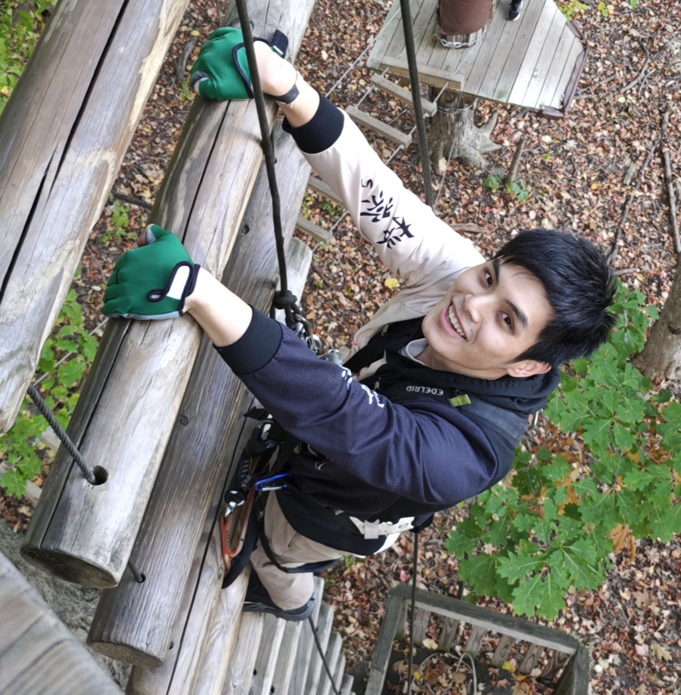

|
 Credit: bar-choco |
Yuewen Hou (侯悦文)
Email: isaachyw@umich.edu I am a second-year PhD student in Computer Science at the University of Michigan, Ann Arbor, advised by Professor Gokul Ravi. I work on quantum computing systems and architecture, with interests in realistic quantum simulation, error suppression and correction, quantum controller architecture, and variational quantum algorithms. I earned my bachelor's degree (double major in CS and ECE) from Shanghai Jiao Tong University and the University of Michigan. Previously, I worked with Prof. Baris Kasikci on efficient data center processor design, Prof. Brendan Kochunas on HPC for neutron transport calculations, and Prof. Tim Byrnes on measurement-based photonic quantum computing. |
I DON'T believe I can really do without teaching.
— Richard P. Feynman
Teaching Assistant:
Outside of research, I play the alto saxophone and stay active (basketball, rock climbing, weightlifting). I listen to a lot of music (J-pop/city pop, electronic, rock), and I shoot photos while traveling with my Canon 90D. I have a cat named Spin and a puppy named Lafite.
Email: isaachyw@umich.edu
Last updated: July, 2026
{kind=link}
{kind=link}
{kind=link}